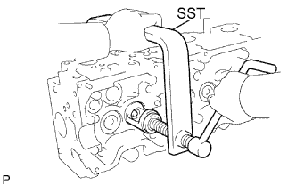
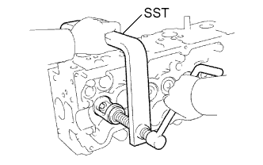
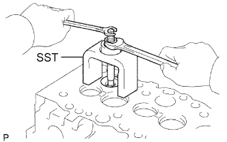

ГОЛОВКА БЛОКА ЦИЛИНДРОВ > РАЗБОРКА |
| 1. REMOVE VALVE LIFTER |
Remove the valve lifter and adjusting shim.
| 2. REMOVE INTAKE VALVE |
|  |
Using SST, compress the spring and remove the 2 retainer locks.
Remove the spring retainer, spring, valve and spring seat plate washer.
| 3. REMOVE EXHAUST VALVE |
|  |
Using SST, compress the spring and remove the 2 retainer locks.
Remove the spring retainer, spring, valve and spring seat plate washer.
| 4. REMOVE VALVE STEM OIL SEAL |
Using needle-nose pliers, remove the oil seals.
| 5. REMOVE COMBUSTION CHAMBER SUB-ASSEMBLY |
|  |
Using SST, remove the 4 combustion chambers and 4 valve seats.
| 6. REMOVE STUD BOLT |
| 7. REMOVE SEMICIRCULAR PLUG |
Remove the semicircular plug from the cylinder head.